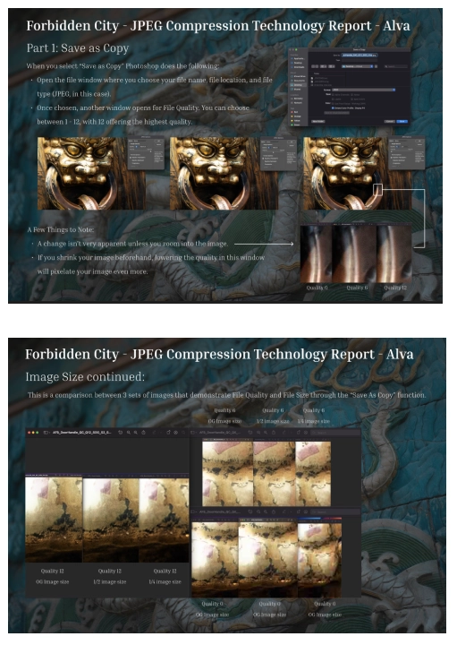
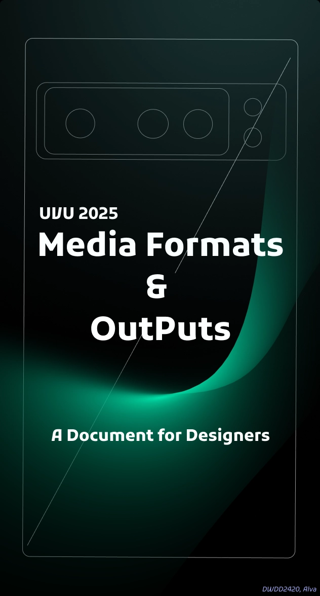
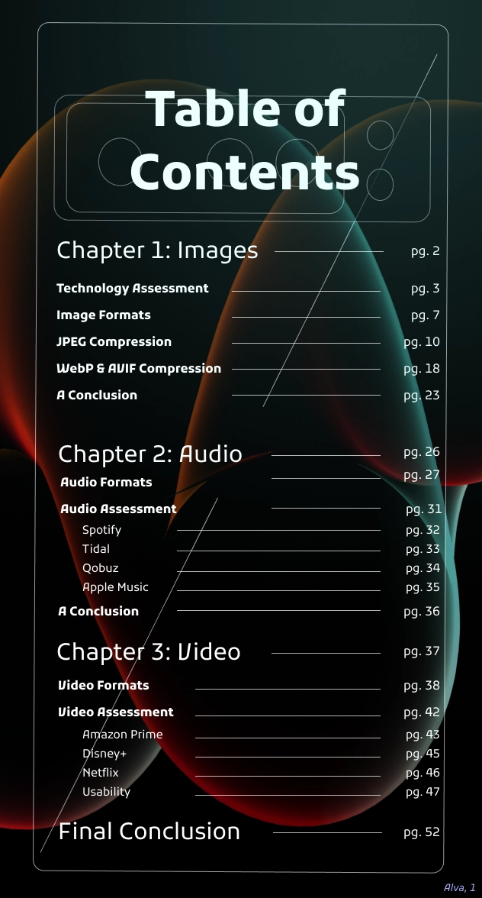

Understanding Technology through Creative Documentation
A Case Study

Project Overview
Two semesters ago, I took Inputs and Outputs at UVU (DWDD2420). We were tasked gaining a deeper understanding of technology throughout the class. To accomplish this, we had to assemble a large document covering everything we learned in and outside of the classroom. This documentation had three sections: Basics and file CODECS, audio, and then video. I had to do a lot of iterations at the end of the year, but I emerged with the first project I was truly proud of.
Diving In
When I first started this project, I was experimenting a lot with the style. I didn’t realize
it all had to be unified by the end of the semester, so I was just going with the flow.
Because of the nature of this class, there were no paper sketches or low-fi mockups. We just
completed a portion of the documentation, turned it in, and then moved on to the next
assignment after ample research.
My first submission is below. Unlike my other classmates, I decided to do a portrait view. I
also utilized a deep blue color paired with teal. It’s silly, because at the time I had
people telling me I was allergic to white backgrounds. They were right. I submitted these
and realized I didn’t like them very much (visually, the information was good), so I changed
things up for the next assignment.


The next module covered Photoshop’s export options with photos. We had to go out and test
image quality, size, compression abilities, and discuss how those all related to each other.
My professor provided professional photos he had taken, and it was these photos that
informed this next design.
This is where a few key issues come in. The most obvious is the background. I figured I
could use the photos for a thematic touch, but this created a lot of visual chaos. mix this
with a serif font and it’s hard to focus on anything. My graphs also needed some help, as
the screenshots were lazily thrown in and labeled. It didn’t feel professional, and these
are by far some of my worst designs.

The Search for Style
As you can see, the following stages went through a lot of iteration. Blue is my favorite
color, so I experimented with different types of blues. I also experimented with different
graph layouts and visual touches. However, one of the most notable changes was the
introduction of pink. I did this because Squoosh, an application we were exploring, used
this as its’ main color. You’ll see it appear in my WebP & AVIF breakdown, and stay within
the design until the final phase.
Another issue in my submissions was their different dimensions. Not only were they different
in color or style, but they wouldn’t work well together in a single PDF.


The Turning Point
We were presenting our designs in-class, when a peer introduced me to a fantastic design idea. He was using the design kit “Abstracto”, and it worked really well within his design. I was already doubtful about my own design, which had transformed into a navy blue background with a pink banner for header text. I was okay with it, but not necessarily proud of it.

My Final Results
When I began to unify everything with a new design in mind, I didn’t realize how long it would take, But I ended up with over 40 pages of content. My portrait design was limiting, but it also allowed for the easy implementation of a table of contents. I unified my colors, added title pages and a table of contents, and polished graphs to better show technical information. I also handmade additional vector images




My Discoveries
This project took a lot of time and energy to accomplish. My satisfaction feels earned -
overhauling the entirety of my document last minute was truly a labor of love. If I were to
go back, I’d try to establish an effective design from the get-go. It was counter-intuitive
to switch the design up every assignment, especially when I was already focusing on the
technical information within each module. I spent a lot of time in Figma, exploring
technology at home, and learning ways to optimize my own technology.
I remember discovering the existence of an AUX cord (I know, crazy), and starting to use one
in my car because it slightly improved the audio quality. The entirety of this class was
understanding and optimizing technology, but I didn’t expect it to personally affect me at
the beginning of the semester. Situations like the AUX cord weren’t the only lightbulb
moments; while the first module dealt with pixels and image quality, the audio and video
sections dealt with how hardware and software can influence the quality of your audio
output. Turns out, high-res music may lose quality when hardware limits the amount of data
that can travel to your headphones or speaker. Bluetooth is one of these offenders.
Utilizing a physical connection, like an AUX cord, improved my audio quality significantly.
Maybe it’s my being a band kid for almost a decade, but the audio module was by far my
favorite.
This information wasn’t simply busy work; the things I learned throughout this class
actively improved my quality of life, streamlined my workflows (I improved my file naming
conventions during the first module), and ignited a passion for this technology that I get
to explore and work with. I’ll always use “Save a Copy” within Photoshop so my current file
isn’t overwritten. I’ll enjoy an AUX cord over Bluetooth anytime. When I watch videos, I’ll
gravitate towards Disney+ for their sharp imagery (thanks to the HDR file format), dynamic
range of values (VHD), and impressive audio immersion (DTS:X file format).
Discoveries like these fuel my passion for UX. When I learn a new software or coding
language, I feel a similar excitement to what I experienced in this class. I’m excited to
learn new things and apply my knowledge to products that others can enjoy. This project went
through so much change, but it was 100% worth it. I’m extremely thankful to the
opportunities I had in this class, and I’m excited to take my findings further into my UX
journey.